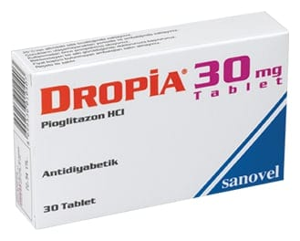

Dropia 30 mg Tablet, 60 Adet

Ne için kullanılır
KT · Bölüm 1DROPİA, beyaz veya hemen hemen beyaz renkli, tek tarafı 30 baskılı düz yuvarlak tablettir. DROPİA, 30, 60 ve 90 tabletlik ambalajlar halinde bulunur.
DROPİA tip 2 (insüline bağımlı olmayan) şeker hastalığını (diyabeti) tedavi etmek için kullanılan antidiyabetik bir ilaçtır. Tip II Diyabet, genellikle yetişkinlikte ortaya çıkan bir şeker hastalığı (diyabet) türüdür. DROPİA tip 2 şeker hastalığı (diyabet) bulunan hastalarda, vücudun kendi ürettiği insülini daha iyi kullanmasını sağlayarak, kandaki şeker seviyesini kontrol etmeye yardımcı olur.
Doktorunuz DROPİA tedavisinin yeterliliğini kullanmaya başlamanızdan 3-6 ay sonra kontrol edecektir. Yeterli yanıt vermediğinize karar verirse tedaviyi kesebilir.
DROPİA Tip II şeker hastalığı (diyabet) tedavisinde yalnızca diğer ağızdan verilen şeker hastalığı ilaçları ile kontrol altına alınamayan hastalarda tek başına ya da diğer ağızdan verilen şeker hastalığı ilaçları ile birlikte kullanılır.
DROPİA ayrıca insülin ile birlikte, sadece metformin isimli şeker hastalığında kullanılan diğer bir ilaç kullanılamıyorsa kullanılabilir. Ancak bu kombinasyon çok sıkı kontrol altında alınmalıdır.